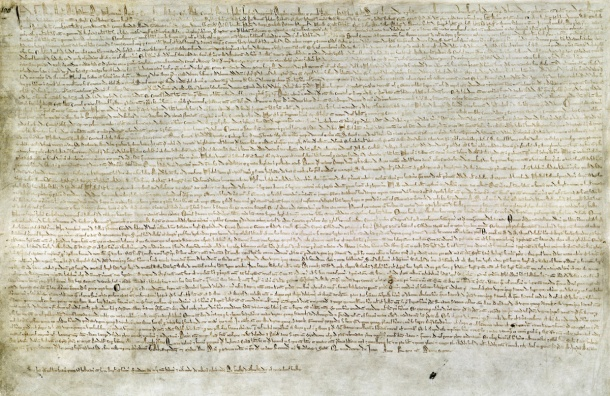

How Did Magna Carta Influence the
U.S. Constitution?
The 13th-century pact inspired the
U.S. Founding Fathers as they wrote the documents that would shape the nation.
In 1215, a band of rebellious
medieval barons forced King John of England to agree to a laundry list of
concessions later called the Great Charter, or in Latin, Magna Carta.
Centuries later, America’s Founding Fathers
took great inspiration from this medieval pact as they forged the nation’s
founding documents—including the Declaration of Independence, the Constitution
and the Bill of Rights.
1.
The Magna Carta was an agreement between whom?
a.
The medieval barons
and King John of England
For 18th-century political thinkers
like Benjamin Franklin
and Thomas Jefferson,
Magna Carta was a potent symbol of liberty and the natural rights of man
against an oppressive or unjust government. The Founding Fathers’ reverence for
Magna Carta had less to do with the actual text of the document, which is mired in medieval law and outdated customs, than
what it represented—an ancient pact safeguarding individual liberty.
2.
The Founding Fathers viewed the Magna Carta as a
pact ___________.
a.
A pact of liberty and
the natural rights of man against an oppressive or unjust government.
“For early Americans, Magna Carta
and the Declaration of Independence were verbal representations of what liberty
was and what government should be—protecting people rather than oppressing
them,” says John Kaminski, director of the Center
for the Study of the American Constitution
at the University of Wisconsin-Madison. “Much in the same way that for the past
100 years the Statue of Liberty has been a visual representation of freedom,
liberty, prosperity and welcoming.”
3.
What similarity did most Americans see in the
Magna Carta and Declaration of Independence?
a.
Verbal representations
of what liberty was and what government should be
When the First Continental Congress
met in 1774 to draft a Declaration of Rights and Grievances against King George III, they asserted that the rights of
the English colonists to life, liberty and property were guaranteed by “the
principles of the English constitution,” a.k.a. Magna Carta. On the title page
of the 1774 Journal of The Proceedings of The Continental Congress is an
image of 12 arms grasping a column on whose base is written “Magna Carta.”
4. What
were the three rights that many Americans felt King George was denying them?
a. Life, liberty and property
Rights
of Life, Liberty and Property
Of the 60-plus clauses contained in
Magna Carta, only a handful are relevant to the 18th-century American
experience. Those include passages that guarantee the right to a trial by a
jury, protection against excessive fines and punishments, safeguarding of
individual liberty and property, and, perhaps most importantly, the forbidding
of taxation without representation.
The two most-cited clauses of Magna
Carta for defenders of liberty and the rule of law are 39 and 40:
39. No free man shall be seized or
imprisoned, or stripped of his rights or possessions, or outlawed or exiled, or
deprived of his standing in any other way, nor will we proceed with force
against him, or send others to do so, except by the lawful judgement of his
equals or by the law of the land.
40. To no one will we sell, to no
one deny or delay right or justice.
The Founding Fathers credited the
39th clause as the origin of the idea that no government can unjustly deprive
any individual of “life, liberty or property” and that no legal action can be
taken against any person without the “lawful judgement of his equals,” what
would later become the right to a trial by a jury of one’s peers.
5.
The Founding Fathers credited the 39th
clause of the Magna Carta as the origin of what?
a.
The idea that no
government can unjustly deprive any individual of “life, liberty or property”
and that no legal action can be taken against any person without the “lawful
judgement of his equals,”
6.
The idea that no legal action can be taken against
any person without the “lawful judgement of his equals,” would later become the
right to a ________________.
a.
The right to trial by
jury of ones peers
The last phrase of clause 39, “by
the law of the land,” set the standard for what is now known as due process of
law.
7. The
British idea of “the law of the land” became known as what in America?
a. due process of the law
“Magna Carta’s dominance was so
great that its phraseology, ‘by the law of the land,’ was used in all American
documents prior to the Constitution,” says Kaminski. “Not until James Madison
introduced ‘due process’ at the national level in 1789 was it included in the
5th Amendment and later in the 14th Amendment.”
Writing in The Federalist Papers,
James Madison
explicitly referenced the 40th clause of Magna Carta when he wrote, “Justice is
the end of government. It is the end of civil society. It ever has been and
ever will be pursued until it be obtained, or until liberty be lost in the
pursuit.”
No
Taxation Without Representation

One
of only four surviving copies of the 1215 Magna Carta
Other rights and protections
enshrined by Magna Carta are less explicit. The protection against taxation
without representation, it’s argued, comes from clause 12 of Magna Carta, which
reads:
12. No scutage nor aid shall be
imposed on our kingdom, unless by common counsel of our kingdom, except for
ransoming our person, for making our eldest son a knight, and for once marrying
our eldest daughter; and for these there shall not be levied more than a
reasonable aid. In like manner it shall be done concerning aids from the city
of London.
At the time of Magna Carta’s
writing, barons were chafing against specific fees levied by the crown and
feudal lords. The text doesn’t explicitly call out taxation or elected
representatives, because those concepts didn’t exist in the 13th century. But
the Founding Fathers drew symbolic spirit from Magna Carta through 18th-century
eyes.
8.
True or False: The Magna Carta clearly outlaws taxation without representation.
a.
False
That spirit is clearly present in
the Declaration of Independence, which used Magna Carta as a model for free men petitioning
a despotic government for their God-given rights to “life, liberty and the pursuit
of happiness.” The Founding Fathers were reacting to decades of abuses by the
British Parliament, which colonists believed had betrayed the “higher law” of
Magna Carta.
“The Americans saw themselves as
very conservative rebels,” Kaminski says. “They were trying to preserve their
constitutional rights, not to overthrow a government.”
9.
What were most Americans more interested in – protecting
rights or changing government
a.
Protecting
rights
The influence of Magna Carta was
surely felt at the Philadelphia Constitutional Convention in 1787, when the
principles of due process and individual liberty fought for in the
Revolutionary War were enshrined into law.
Magna
Carta's Legacy in the Bill of Rights
The
Bill of Rights, the first ten amendments to the United States Constitution.
There are some clear echoes of Magna
Carta in the body of the Constitution itself. Article III, Section 2 guarantees
a jury trial in all criminal trials (except impeachment). And Article 1,
Section 9 forbids the suspension of habeas corpus, which essentially
means that no one can be held or imprisoned without legal cause.
10. What
does habeas corpus prevent from
happening?
a. Prevents anyone from being
held or imprisoned without legal cause
But Magna Carta’s legacy is
reflected most clearly in the Bill of Rights, the first 10 amendments to the
Constitution ratified by the states in 1791. In particular, amendments five
through seven set ground rules for a speedy and fair jury trial, and the Eighth
Amendment prohibits excessive bail and fines. That last prohibition can be
traced directly back to the 20th clause of Magna Carta:
20. For a trivial offence, a free
man shall be fined only in proportion to the degree of his offence, and for a
serious offence correspondingly, but not so heavily as to deprive him of his
livelihood.
11. Which Constitutional amendments are most closely
connected to the Magna Carta?
a. 5th-7th
But perhaps the greatest influence
of Magna Carta on the Founding Fathers was their collective understanding that
in drafting the U.S. Constitution they were attempting to create a Magna Carta
for a new era.
“They knew exactly what they were
doing,” says Kaminski. “They didn’t know if it would succeed or if it would
last for centuries, but they were doing the best they could.”
https://www.history.com/news/magna-carta-influence-us-constitution-bill-of-rights